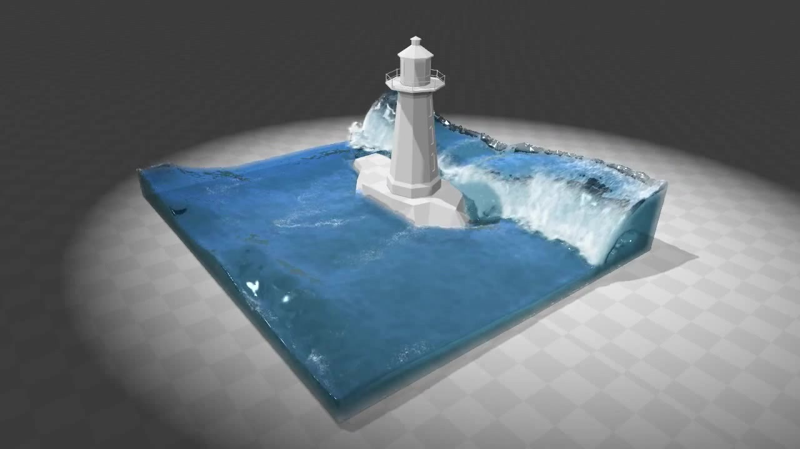

|

|
In this project, we are trying to accelerate fluid simulation algorithm based on Position Based Dynamics (PBD) using GPU. Smoothed particle hydrodynamics (SPH) will be used for simulating the fluid as particles, and surfaces will be reconstructed and rendered from particles.